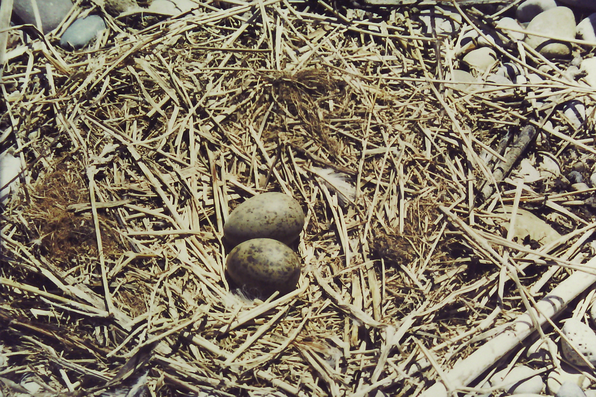

ABOUT THE ISLAND
Chantry Island is located on Lake Huron, just over a mile southwest of the Saugeen River mouth in Southampton, Ontario. On the island is a majestic Imperial Lighthouse built in the mid 1800’s, as well as the Keeper’s quarters and a boat house. In 1822, during a hydrographic survey, Captain Henry Bayfield of the Royal Navy christened the island and named it after his friend and British sculptor Sir Francis Chantry.
Chantry Island is a glacial moraine and consists of stone above the water and beneath
extending a mile north and a mile south of the island. These underwater shoals of massive
granite boulders have made this area one of the most treacherous in the Great Lakes. There
are over 50 known shipwrecks around the island and there are many accounts from the 1800’s
and early – mid 1900’s of these disasters and lost lives. Today, buoys and modern navigational
tools safely guide boats through the area.
The island varies in size depending on the level of Lake Huron. Today, with a low
lake level Chantry Island is about 68 acres. In 1986 when the water level was at the
highest of the century, the island was only about 10 acres, causing trees on the west,
north and south sides to drown.
Chantry Lighthouse History
During the mid 1800’s water traffic on the Great Lakes had substantially
increased and the colonial government called for improved navigational tools for
the mariners on the Lake Huron. John Brown of Thorold was contracted to build the
lighthouse on Chantry Island, as well as 10 other lighthouses to help sailors navigate
the Lake. Because of the expense and difficulty of building, only six were completed.
The Chantry Island Lighthouse was one of these completed and it was lit on April 1, 1859.
The lighthouse stands 86 ft. above water level and is 80 ft. high from its base to the
light’s center. The lantern room of the lighthouse was fitted with a Fresnel lens built and
transported from Paris, France. The first fuel used was sperm whale oil and the first light
was a fixed light, not the familiar flashing one. Other fuels used have been colza oil, coal
oil, kerosene, acetylene and electricity. Its present-day flashing light is solar powered.

Federal Bird Sanctuary
In 1957 the Canadian Wildlife Service declared Chantry Island a Federal Migratory Bird Sanctuary to protect the migratory and nesting birds of the island. It is the largest Federal Migratory Bird Sanctuary between James Bay and Point Pelee. There are approximately fifty thousand birds (including chicks) on the island during the breeding season. It is home to nesting colonies of Great Blue Heron, Great Egret, Black-crowned Night-Heron, Herring Gull, Ring-billed Gull and Double-crested Cormorant. Water fowl such as Mallard, American Black Duck, Gadwall, Blue-winged Teal, Green-winged Teal, Northern Pintail, and American Wigeon are also known nesters on the island. Because the island is a migratory bird sanctuary, the number of people on the island on any given day is strictly limited and tours must be booked through the Chantry Island Tour Base.
Lighthouse Restoration
For almost 100 years (1859 – 1954), light keepers lived on the island to keep the light burning for mariners on the lake. When the lighthouse lamp was converted to electricity in 1954, a light keeper was no longer needed. The buildings were left neglected and suffered at the hands of vandals. The lighthouse still stood intact, but little was left of the light keeper’s quarters. The roof had fallen in and the walls and floors had crumbled into a pile of rubble in the basement.

Before
After

Partners in the restoration, island maintenance, Chantry Island Tour operation and other Marine Heritage endeavors include the Town of Saugeen Shores, Bruce County Museum and Cultural Centre, Southampton Propeller Club, Chantry Island Chambettes and Saugeen Shores Chamber of Commerce. Their continuous support contributes to the success of the Marine Heritage Society goal to preserve the local marine history.